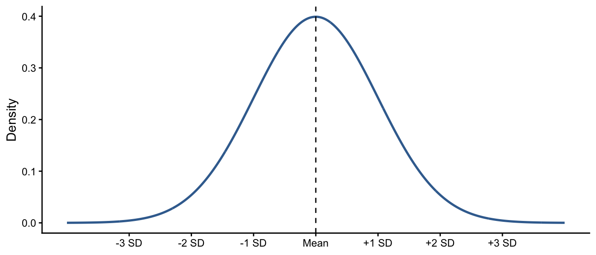

8 The Normal Distribution and z-Scores
8.1 The Question
NoteCentral question
How can the normal distribution help us describe where a value falls and determine whether it is unusual?
The previous chapter introduced probability as a way to describe uncertainty and area within a distribution. We now apply those ideas to one of the most useful theoretical distributions in statistics: the normal distribution.
If a variable is approximately normally distributed, its mean and standard deviation allow us to describe where a value falls, compare values measured on different scales, and calculate the proportion of observations expected above or below a particular point.
8.2 What You Will Learn
After completing this chapter, you should be able to:
- Recognize the main features of a normal distribution.
- Use the empirical rule to describe values near the mean.
- Calculate and interpret a z-score.
- Convert a z-score back to an original value.
- Use the standard normal table to find probabilities above or below a value.
- Explain whether a value is relatively common or unusual under a normal model.
8.3 From Empirical to Theoretical Distributions
An empirical distribution describes values that were actually observed. A histogram of sentence lengths, response times, or detention days is an empirical distribution. So far, we have been working with empirical distributions.
A theoretical distribution is a mathematical model describing how values could be distributed. It provides a simplified model that can be used to calculate probabilities. When the normal approximation is appropriate, it helps us ask:
- How far is a value from the mean?
- What proportion of values are lower or higher?
- Is the value relatively common or unusual?
WarningA normal distribution is a model
Not every variable is normally distributed. Examine the variable’s shape and consider whether strong skew, extreme outliers, or natural limits make the approximation unreasonable. For example, height tends to be distributed normally. But, the number of minutes late a bus is at arriving is not normally distributed (it is right skewed).
8.4 The Shape of the Normal Distribution
The normal distribution is often described as bell-shaped. It:
- is symmetric around its center;
- has an equal mean, median, and mode;
- places most values near the mean;
- contains fewer values farther from the mean; and
- has a total area of 1 under its curve.
Its mean determines the center. Its standard deviation determines the spread.
8.5 The Empirical Rule
The empirical rule, or 68–95–99.7 rule, describes values in a normal distribution:
- Approximately 68% fall within 1 standard deviation of the mean.
- Approximately 95% fall within 2 standard deviations.
- Approximately 99.7% fall within 3 standard deviations.
Let’s look at an example. Suppose pretrial detention length is approximately normally distributed in a city and has a mean of 67 days and a standard deviation of 3 days. Using the empirical rule, we can determine that:
| Range | Calculation | Approximate percentage |
|---|---|---|
| 64 to 70 days | \(67\pm1(3)\) | 68% |
| 61 to 73 days | \(67\pm2(3)\) | 95% |
| 58 to 76 days | \(67\pm3(3)\) | 99.7% |
The empirical rule gives useful approximations, but only when a distribution is reasonably normal.
8.6 Locating a Value with a z-Score
A z-score describes how far a value is from the mean in standard deviation units:
\[ z=\frac{x-\bar{x}}{s} \]
where \(x\) is the value, \(\bar{x}\) is the mean, and \(s\) is the standard deviation.
- A positive score is above the mean.
- A negative score is below the mean.
- A score of 0 is equal to the mean.
The absolute size gives the distance. For example, \(z=-1.25\) is 1.25 standard deviations below the mean.
8.6.1 Worked Example: Detention Length
For a detention length of 73 days:
\[ z=\frac{73-67}{3}=2.00 \]
The detention length is two standard deviations above the mean. Under a normal model, it is near the upper boundary of the range containing approximately 95% of observations.
ImportantInterpret the score in context
Do not report only that “the z-score is 2.” State that the detention length is two standard deviations above the mean.
8.7 Comparing Different Scales
Because z-scores use standard deviation units, they can compare values measured on different scales.
Suppose one case has:
- a sentence length of 72 months, where \(\bar{x}=60\) and \(s=8\); and
- a processing time of 45 days, where \(\bar{x}=35\) and \(s=5\).
For sentence length:
\[ z=\frac{72-60}{8}=1.50 \]
For processing time:
\[ z=\frac{45-35}{5}=2.00 \]
The processing time is more unusual relative to its distribution. It is two standard deviations above its mean, compared with 1.5 for sentence length.
8.8 Returning to the Original Scale
If the z-score, mean, and standard deviation are known:
\[ x=\bar{x}+zs \]
For \(\bar{x}=60\), \(s=12\), and \(z=1.50\):
\[ x=60+1.50(12)=78 \]
8.9 The Standard Normal Distribution
When values in a normal distribution are converted to z-scores, they form the standard normal distribution, which has a mean of 0 and a standard deviation of 1.
The original unit might be months, seconds, or a scale score. Once converted to a z-score, its position can be evaluated using the same standard normal curve.
8.10 Probability as Area Under the Curve
The total area under the standard normal curve equals 1. Because it is symmetric, 0.50 lies below the mean and 0.50 lies above it.
The standard normal table used with this book reports the area between the mean, \(z=0\), and a positive z-score. We combine that table value with 0.50 to find the desired probability. The complete table and instructions appear in the appendix, Standard Normal Distribution Table.
TipDraw and shade the curve first
Sketch a normal curve, mark the z-score, and shade the requested area before calculating. The picture helps determine whether to add or subtract the table value from 0.50.
8.11 Worked Example: An Unusually Long Sentence?
Burglary sentences are approximately normal with a mean of 60 months and a standard deviation of 12 months. A particular sentence is 78 months.
8.11.1 Step 1: Calculate the z-Score
\[ z=\frac{78-60}{12}=1.50 \]
The sentence is 1.5 standard deviations above the mean.
8.11.2 Step 2: Find the Table Area
For \(z=1.50\), the table reports \(A=0.4332\), the area between the mean and the score.
8.11.3 Step 3: Find the Area Below
\[ P(Z<1.50)=0.50+0.4332=0.9332 \]
Approximately 93.32% of sentences are expected to be 78 months or shorter.
8.11.4 Step 4: Find the Area Above
\[ P(Z>1.50)=0.50-0.4332=0.0668 \]
Approximately 6.68% are expected to be longer. A 78-month sentence is relatively unusual, although not impossible.
8.12 Working with Negative z-Scores
For a sentence of 42 months:
\[ z=\frac{42-60}{12}=-1.50 \]
Because the distribution is symmetric, we use the same table entry, 0.4332:
\[ P(Z<-1.50)=0.50-0.4332=0.0668 \]
Approximately 6.68% of sentences are expected to be 42 months or shorter.
| Requested area | Calculation using table area \(A\) |
|---|---|
| Below a positive z-score | \(0.50+A\) |
| Above a positive z-score | \(0.50-A\) |
| Below a negative z-score | \(0.50-A\) |
| Above a negative z-score | \(0.50+A\) |
8.13 Common Mistakes
- Treating the table entry as the final answer: The table reports only the area between the mean and the score.
- Ignoring the sign: Use the absolute value to locate the table entry, but retain the sign when deciding which area is requested.
- Confusing a score with a probability: A z-score is a location; a probability is an area.
- Calling every score above the mean unusual: A positive score only means that the value is above the mean.
8.14 Check Your Understanding
Response times have a mean of 120 seconds and a standard deviation of 20 seconds.
- Calculate the z-score for 150 seconds.
- Interpret the score.
- Which is more extreme: 150 seconds or 85 seconds?
NoteCheck your answers
- \(z=(150-120)/20=1.50\).
- A 150-second response is 1.5 standard deviations above the mean.
- For 85 seconds, \(z=(85-120)/20=-1.75\). Because \(|-1.75|>|1.50|\), 85 seconds is farther from the mean.
8.15 Test Your Knowledge: Emergency Response Times
8.15.1 The Scenario
The Boyznblew City Police Department is reviewing priority-call response times. They are approximately normal with a mean of 120 seconds and a standard deviation of 20 seconds.
8.15.2 Your Task
For each response time—125, 175, 100, and 159 seconds:
- Calculate the z-score.
- Draw a normal curve and mark the score.
- Find the probability below the value.
- Find the probability above the value.
- Identify which response time is most unusual.
- Explain why “most unusual” does not necessarily mean “most important.”
Use the Standard Normal Distribution Table in the appendix and round each z-score to two decimal places.
NoteReview the answers
| Response time | z-score | Probability below | Probability above |
|---|---|---|---|
| 125 seconds | 0.25 | 0.5987 | 0.4013 |
| 175 seconds | 2.75 | 0.9970 | 0.0030 |
| 100 seconds | -1.00 | 0.1587 | 0.8413 |
| 159 seconds | 1.95 | 0.9744 | 0.0256 |
The 175-second response is most unusual because its absolute z-score is largest. Only about 0.30% of response times are expected to be longer.
Statistical unusualness does not establish practical importance. Importance also depends on the call circumstances, measurement quality, operational standards, and substantive judgment.
8.16 Data Investigation: Standardizing Two Variables
Choose two quantitative variables measured in different units.
- Calculate the mean and standard deviation for each.
- Select one observation and calculate its z-score on both variables.
- Identify the variable on which it is farther from the mean.
- Interpret both scores in plain language.
- Examine each distribution and explain whether a normal model appears reasonable.
8.17 Project Connection
- Identify one quantitative variable in your semester data.
- Examine its distribution using an appropriate graph.
- Describe whether it appears approximately normal, skewed, or irregular.
- Calculate and interpret a z-score for one observation.
- Explain one limitation of using the normal model for this variable.
8.18 Looking Ahead
This chapter used the normal distribution to describe individual values. The next chapter shifts from distributions of observations to sampling distributions. We will ask how a statistic, such as a sample mean, varies across many random samples. The same ideas—center, standard deviation, z-scores, area, and unusual outcomes—will then be applied to samples rather than individual cases.
8.19 Chapter Summary
- The normal distribution is a symmetric theoretical model with most values near the mean.
- Approximately 68%, 95%, and 99.7% of values fall within one, two, and three standard deviations.
- A z-score expresses a value’s distance from the mean in standard deviation units.
- Standardization permits comparisons across different measurement scales.
- The standard normal distribution has a mean of 0 and a standard deviation of 1.
- Probability is represented by area under the curve.
- The table reports area between the mean and a selected positive z-score.
- A small tail probability indicates an unusual value under the model, not an impossible or necessarily important value.
8.20 Key Terms
- Empirical distribution: The distribution of values observed in data.
- Empirical rule: The principle that approximately 68%, 95%, and 99.7% of a normal distribution fall within one, two, and three standard deviations of the mean.
- Normal distribution: A symmetric, bell-shaped theoretical probability distribution.
- Standard normal distribution: A normal distribution with a mean of 0 and a standard deviation of 1.
- Standardization: Converting values to a common scale expressed in standard deviation units.
- Theoretical distribution: A mathematical model describing possible values and their probabilities.
- z-score: The number of standard deviations a value falls above or below the mean.